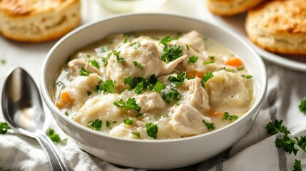

How to Make Chicken and Dumplings

Simple Chicken and Dumplings
This is a simple recipe for chicken and dumplings
Ingredients
- Two cans of cooked chunk chicken
- One large can and one regular can of cream of chicken soup
- Two cans of biscuits
- Quart of water
- Two cups of milk
- Rosemary
- Sage
- Thyme
- Salt
- Pepper
Steps
- In a dutch oven, add water and milk and being warming.
- Add the contents of the cans of cream of chicken soup, and use a whisk to break them up
into the liquid.
- Open each can of chicken, pour in the juice, and then add the chicken.
- Cut up each biscuit into 4 pieces and add all of them to the mix. Separate and
push them down with a large spoon.
- Add sage, rosemary, thyme, salt, and pepper to taste.
- As it begins to boil, turn the temp so that it just maintains a boil.
- Stir occasionally from the bottom to keep stuff from sticking to the bottom.
- Cook for one and a half to two hours until thick.
Home